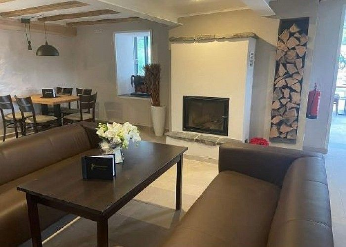
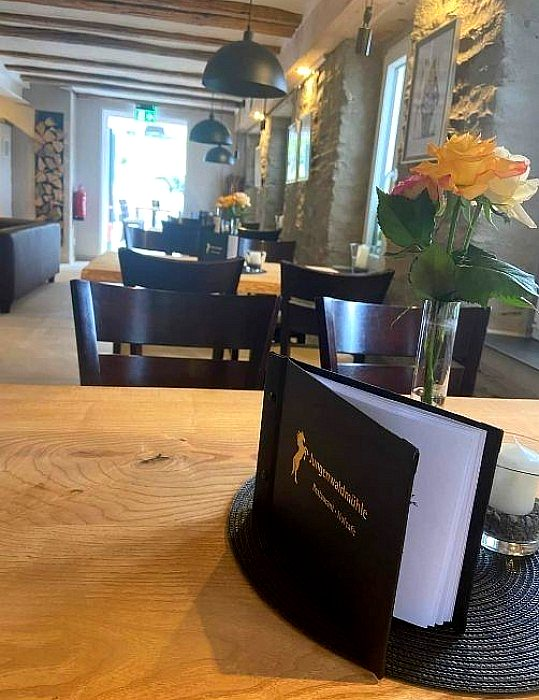

Frisch gekocht.
Herzlich serviert.
Regionale Küche von Christian Böhm und hausgemachte Kuchen von Konditormeister Peter Böhm.
Ein Familienbetrieb mit Persönlichkeit
Christian ist ausgebildeter Koch und bringt Erfahrung aus mehreren Jahren in der Schweiz mit. Peter backt als Konditormeister Kuchen und Torten selbst. Britta kümmert sich als gelernte Hotelfachfrau um den Service.
Das Ergebnis ist ein Ort, an dem Gastgeber und Küche persönlich erlebbar sind.

Öffnungszeiten 2026
Vom 28. März bis Ende Oktober: Samstag bis Dienstag von 11:30 bis 21:00 Uhr. Zusätzlich ist an Karfreitag sowie an Feiertagen und Brückentagen geöffnet. Warme Küche gibt es bis 19:30 Uhr.
Saisonale Zeiten können sich ändern. Vor längerer Anfahrt empfiehlt sich eine kurze telefonische Bestätigung.
Speisekarte
Die Karte wird gelegentlich angepasst. Auswahl gemäß aktuell veröffentlichter Restaurantseite.